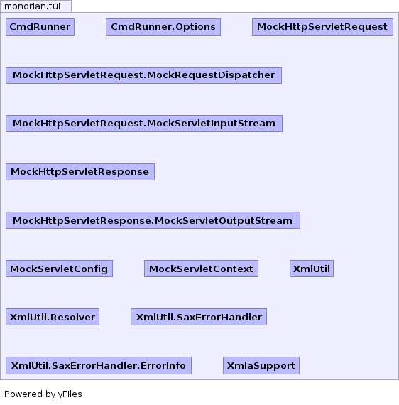

- Overview
- Package
- Class
- Tree
- Deprecated
- Index
- Help
| Class | Description |
|---|---|
| CmdRunner |
Command line utility which reads and executes MDX commands.
|
| CmdRunner.Options | |
| MockHttpServletRequest |
Partial implementation of the
HttpServletRequest where just
enough is present to allow for communication between Mondrian's
XMLA code and other code in the same JVM. |
| MockHttpServletRequest.MockRequestDispatcher | |
| MockHttpServletRequest.MockServletInputStream | |
| MockHttpServletResponse |
This is a partial implementation of the HttpServletResponse where just
enough is present to allow for communication between Mondrian's
XMLA code and other code in the same JVM.
|
| MockHttpServletResponse.MockServletOutputStream | |
| MockServletConfig |
This is a partial implementation of the ServletConfig where just
enough is present to allow for communication between Mondrian's
XMLA code and other code in the same JVM.
|
| MockServletContext |
Partial implementation of the
ServletContext where just
enough is present to allow for communication between Mondrian's
XMLA code and other code in the same JVM. |
| XmlaSupport |
Support for making XMLA requests and looking at the responses.
|
| XmlUtil |
Some XML parsing, validation and transform utility methods used
to valiate XMLA responses.
|
| XmlUtil.Resolver |
This can be extened to have a map from publicId/systemId
to InputSource.
|
| XmlUtil.SaxErrorHandler |
Error handler plus helper methods.
|
| XmlUtil.SaxErrorHandler.ErrorInfo |
The main class in this package, CmdRunner is a
command-line which accepts MDX commands and prints the results.
